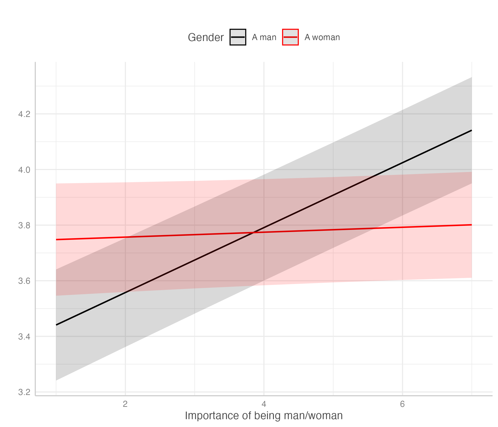

table cells about incels (not really)
Narativ o mladé generaci přiklánějící se ke krajní pravici začíná být ohraná písnička. Přece jenom Bad Religion vydali The Kids are Alt-Right v roce 2018. A když se mluví o mladé generaci, mají se na mysli samozřejmě mladí muži.
Proč právě mladí muži? Často zmiňovaná jsou dvě vysvětlení krize maskulinity a ekonomická nejistota (třeba tady).
O krizi maskulinity a postojích týkajících se genderu napříč generacemi nám můžou něco říct data z poslední vlny European Social Survey, sbírané v roce 2023. Preliminary data zatím obsahují data z Rakouska, Švýcarska, Německa, Finska, Velké Británie, Chorvatska, Maďarska, Irska, Litvy, Nizozemska, Norska, Slovinska a Slovenska. Obsahují taky celou řadu otázek na postoje k právům gayů a leseb1, nespravedlivému zacházení kvůli genderu2, genderové rovnosti3, sexuálního násilí4.
A nyní grafy. (Gender respondenta beru z otázky na non-binary gender: “Which of the options on this card best describes you?” 1) A man, 2) A woman, 3) Other. Kategorii other vyřazuju z grafů, protože v ní je jen pár respondentů, konkrétně 36 z 22 138).
Nejprve k právům gayů a leseb.
V obou otázkách je do očí bijící rozdíl mezi státy západní a východní Evropy. S klesajícím věkem zpravidla roste podpora rozšiřování práv gayů a leseb. Ženy podporují rozšiřování práv více než muži.
Tady k politickému zastoupení žen. Což je o dost nepřehlednější než předešlé dva grafy.
Sexuálnímu násilí na pracovišti. Tady ženy častěji deklarují, že ženy nepřehánějí tvrzení o sexuálním obtěžování na pracovišti. S klesajícím věkem spíš roste rozdíl mezi muži a ženami. Nejviditelnější rozdíl - v Rakousku.

Nerovnému odměňování. Které je opět nepřehledné. Ve Skandinávii s klesajícím věkem klesá přesvědčení o platovém podhodnocení žen. V postkomunistických zemích vnímání gender gapu nezávisí na věku.
Je tam i otázka na to, jak moc důležité je být mužem/ženou pro to, jak respondent vnímá sám sebe (whatever it means). Východní evropa je opět vidět. lol?
To by z grafů stačilo. Proměnných je tam spousta. Když ti život nadělí citrony, udělej limonádu. Když ti dotazníkové šetření nadělí hromadu proměnných, udělej faktorovou analýzu.
Faktorová analýza ukazuje na tři skupiny proměnných, které spolu souvisí.
- otázky na práva gayů a leseb
- otázky na rovnost žen (jak dobré je rovnocenné zastoupení žen v placené práci, rovnocenné zastoupení žen v politice, v managementu)
- otázky na (misogynní?) postoje k ženám (Jak často se ženy snaží získat moc tím, že získají kontrolu nad muži, Jak často se ženy snadno urazí a Jak často ženy přehánějí tvrzení o sexuálním obtěžování na pracovišti)
Tak můžeme vytvořit tři indexy ukazující jak moc respondent podporuje širší práva pro gaye a lesby, … Indexy jsou standardizované na 0-10. Čím větší hodnota indexu, tím větší podpora práv/rovnosti/misogynní postoje. Ty pak můžeme vysvětlovat v regresních modelech.
Modely podpory širších práv pro gaye a lesby ukazují, že s rostoucím věkem klesá podpora. Ženy podporují širší práva více než muži. Rozdíl mezi muži a ženami je větší u mladších.
Při odhadu modelů zvlášť pro jednotlivé země je vidět diverzita. Zajímavé je Chorvatsko a Slovinsko, kde u mužů s rostoucím věkem klesá podpora jen mírně. U žen daleko strměji. Zároveň je tam velký rozdíl mezi mladými muži a ženami.
Podpora genderové rovnosti ukazuje podobné věci.
A misogynní postoje taky.
U nich je zajímavé pro muže s rostoucí důležitostí bytí mužem sebevnímání rostou misogynní postoje. U žen to neplatí. Je toto krize maskulinity? Nevím. Každopádně to nic neříká o mladých mužích.

-
Using this card, please say to what extent you agree or disagree with each of the following statements. a) Gay men and lesbians should be free to live their own life as they wish. b) If a close family member was a gay man or a lesbian, I would feel ashamed. c) Gay male and lesbian couples should have the same rights to adopt children as straight couples. ↩︎
-
a) Unfairly treated when visiting a doctor or seeking medical treatment because being a man/woman, b) Unfairly treated in hiring pay or promotion at work because being a man/woman, … ↩︎
-
a) Bad or good for family life in [country] if equal numbers of women and men are in paid work, b) Bad or good for politics in [country] if equal numbers of women and men are in positions of political leadership, … ↩︎
-
a) How often women exaggerate claims of sexual harassment in the workplace ↩︎